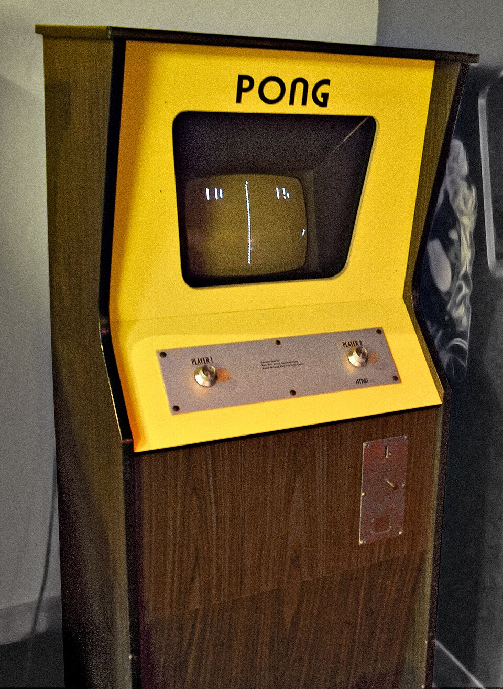

Pong
Divi spēlētāji, divas raketes un viena bumbiņa.
Atari spēlē divi spēlētāji atvaira bumbiņu ar ekrānā redzamām raketēm. Vienkāršā galda tenisa spēle kļuva par vienu no agrīnajiem videospēļu panākumiem.

Divi spēlētāji, divas raketes un viena bumbiņa.
Atari spēlē divi spēlētāji atvaira bumbiņu ar ekrānā redzamām raketēm. Vienkāršā galda tenisa spēle kļuva par vienu no agrīnajiem videospēļu panākumiem.